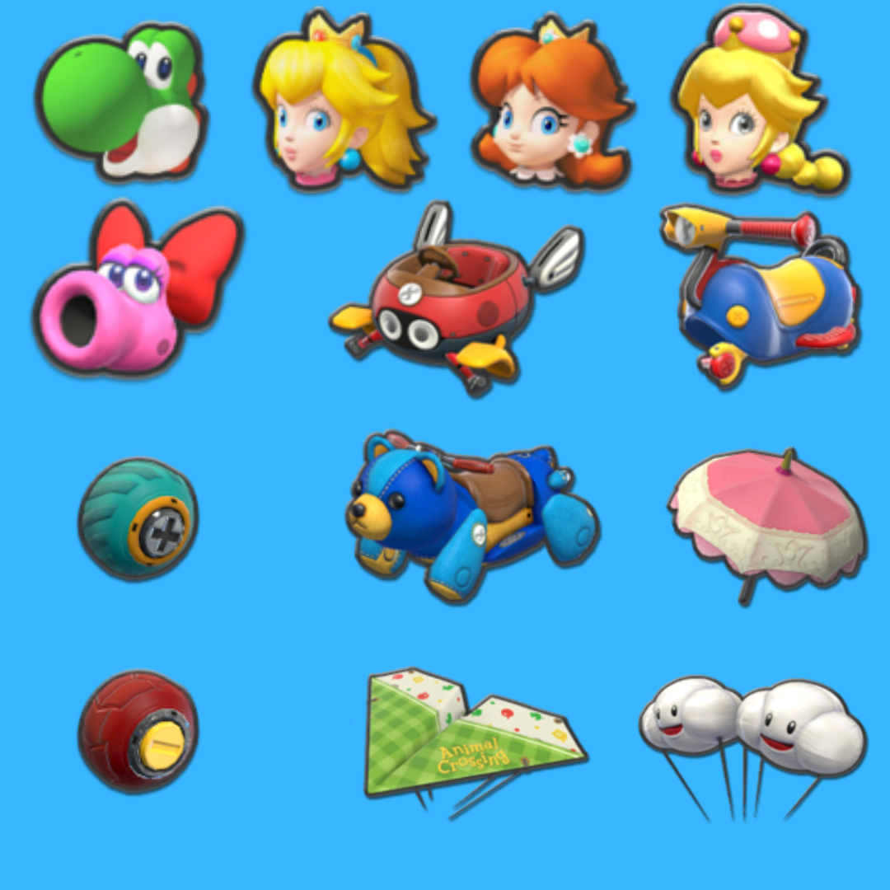

Team Composition
In competitive Mario Kart, achieving the perfect balance between speed and acceleration is crucial for success on the track. Yoshi, Birdo, Peach, Daisy, and Peachette, along with the Teddy Buggy kart and Roller tires, form an unbeatable combination that excels in both aspects. These characters boast optimal mini-turbo speed and acceleration, granting players the agility to swiftly navigate tight corners and the burst of speed necessary to maintain momentum throughout the race. Their well-rounded stats offer versatility, enabling players to adapt to various track conditions and challenges with ease. Furthermore, the Teddy Buggy kart's balanced handling and the Roller tires' exceptional grip provide stability and control, allowing for precise maneuvering and efficient use of mini-turbos. This combination not only maximizes performance but also minimizes the risk of setbacks, making it the ultimate choice for competitive Mario Kart players striving for victory.